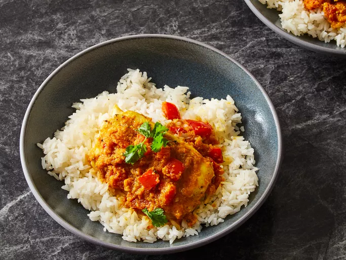

Indian Fish Curry

Description
This Indian fish curry is a very spicy dish. The recipe was inspired by a Bengali fish recipe my mother used to make in India.
Ingredients
- 3 tbsp tablespoons canola oil, divided
- 2 tsp Dijon mustard
- 1 tsp ground black pepper
- 1 ½ tsp salt, divided
- 4 white fish fillets
- 1 medium onion, coarsely chopped
- 4 cloves garlic, roughly chopped
- 1 (1 inch) piece fresh ginger root, peeled and chopped
- 5 cashew halves
- 2 tsp cayenne pepper, or to taste
- 1 tsp ground cumin
- 1 tsp ground coriander
- 1 tsp white sugar
- ½ tsp ground turmeric
- ½ cup chopped tomato
- ½ cup vegetable broth
- ¼ cup vegetable broth
- ¼ cup chopped fresh cilantro
Steps
- Gather the ingredients
- Mix 2 tablespoons oil, mustard, black pepper, and 1/2 teaspoon salt together in a shallow glass bowl.
- Add fish and turn to coat. Cover and refrigerate for 30 minutes.
- While the fish is marinating, combine onion, garlic, ginger, and cashews in a blender or food processor; pulse until mixture forms a paste.
- Preheat the oven to 350 degrees F (175 degrees C).
- Heat remaining 1 tablespoon oil in a skillet over medium-low heat. Add cashew paste; cook and stir until fragrant, 1 to 2 minutes.
- Add cayenne pepper, remaining 1 teaspoon salt, cumin, coriander, sugar, and turmeric to the cashew paste in the skillet; cook and stir for 5 minutes. Stir in tomato and broth.
- Remove fish from marinade and shake off excess; discard remaining marinade. Arrange fish in a baking dish and pour sauce over top.
- Bake, covered, in the preheated oven until fish flakes easily with a fork, about 30 minutes. Garnish with cilantro.